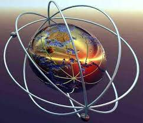

teoria cuantica de campos
La teoría cuántica de campos es una disciplina de la física que aplica los principios de la mecánica cuántica a los sistemas clásicos de campos continuos, por ejemplo, el campo electromagnético. Una consecuencia inmediata de esta teoría es que el comportamiento cuántico de un campo continuo es equivalente al de un sistema de partículasn 1 cuyo número no es constante, es decir, que pueden crearse o destruirse.1 También se la denomina teoría de campos cuánticos, TCCn 2 o QFT, sigla en inglés de quantum field theory. Su principal aplicación es la física de altas energías, donde se combina con los postulados de la relatividad especial. En este régimen se usa para estudiar las partículas subatómicas y sus interacciones, y permite explicar fenómenos como la relación entre espín y estadística, la simetría CPT, la existencia de antimateria, etc.2 También es una herramienta habitual en el campo de la física de la materia condensada, donde se utiliza para describir las excitaciones colectivas de sistemas de muchas partículas y entender efectos físicos tales como la superconductividad, la superfluidez o el efecto Hall cuántico.3 En particular, la teoría cuántica del campo electromagnético, conocida como electrodinámica cuántica, fue el primer ejemplo de teoría cuántica de campos que se estudió y es la teoría física probada experimentalmente con mayor precisión.4 Los fundamentos de la teoría de campos cuántica fueron desarrollados entre las décadas de 1920 y 1950 por Dirac, Fock, Pauli, Tomonaga, Schwinger, Feynman y Dyson, entre otros. |
 |
Richard Feynman, Shin'ichirō Tomonaga y Julian Schwinger recibieron el premio Nobel de física en 1965 por el desarrollo de la electrodinámica cuántica.
El desarrollo de la teoría cuántica de campos ocurrió simultáneamente con el de la mecánica cuántica «ordinaria», en un intento de explicar los fenómenos atómicos tomando también en cuenta las leyes de la teoría de la relatividad.5 Entre 1926 y 1928 se desarrollaron los primeros intentos de encontrar una ecuación de onda relativista que describiera el movimiento de una partícula cuántica, debidos a Erwin Schrödinger y a Paul Dirac. Sin embargo, dichas ecuaciones mostraban ciertas inconsistencias.
Por otro lado, en 1926 Werner Heisenberg, Pascual Jordan y Max Born profundizaron en el estudio del problema del cuerpo negro: el comportamiento de la radiación electromagnética dentro de una cavidad, en ausencia de partículas cargadas. Esto constituyó el primer ejemplo de una teoría cuántica de campos, en este caso aplicando las reglas de cuantización al campo electromagnético. En sus resultados, la radiación se comportaba como un conjunto de partículas —los fotones—, en consonancia con la hipótesis de los cuantos de luz, formulada por Einstein en 1905. Tras este ejemplo, las mencionadas ecuaciones de onda relativistas se estudiaron de nuevo desde otro punto de vista. En lugar de interpretarlas como funciones de onda, se usaron las reglas de cuantización de un campo clásico para manipularlas. De este modo se obtuvieron ecuaciones para partículas cuánticas respetando las leyes de la relatividad que sí eran consistentes. Esta reinterpretación, conocida como segunda cuantización, fue llevada a cabo por Heisenberg, Wolfgang Pauli, Vladimir Fock, Wendell Furry, Robert Oppenheimer y Victor Weisskopf.
A pesar de sus éxitos iniciales, la teoría cuántica de campos tenía problemas teóricos muy serios. El cálculo de muchas cantidades físicas en apariencia ordinarias resultaba en un valor infinito, un resultado sin sentido. Un ejemplo de esto eran las pequeñas diferencias entre algunos niveles de energía en el átomo de hidrógeno, la llamada estructura fina. Este «problema de las divergencias» fue resuelto durante las décadas de 1930 y 1940 por Julian Schwinger, Freeman Dyson, Richard Feynman y Shin'ichiro Tomonaga entre otros, mediante una técnica conocida como renormalización. Esta etapa culminó con el desarrollo de la moderna electrodinámica cuántica —QED, por Quantum Electrodynamics—. La técnica de los diagramas de Feynman, un procedimiento gráfico de cálculo desarrollado por Richard Feynman, se convirtió en una de las herramientas básicas de la teoría cuántica de campos.
En la década de 1950 QED fue generalizada a una clase más general de teorías conocidas como teorías gauge, comenzando con el trabajo de Chen Ning Yang y Robert Mills.6 A finales de la década de 1960, Sheldon Glashow, Abdus Salam y Steven Weinberg unificaron las interacciones electromagnética y débil en la teoría electrodébil —una teoría gauge— mediante el concepto de ruptura espontánea de simetría, introducido originariamente para explicar la superconductividad.7
Sin embargo, no fue hasta la década de 1970 que quedó establecido el modelo estándar de la física de partículas. El modelo de unificación electrodébil no recibió especial atención hasta que, en 1971, Gerardus 't Hooft y Martinus Veltman demostraron que las teorías con simetrías rotas espontáneamente podían ser renormalizadas.8 Por otro lado, la intensidad de las interacciones fuertes entre hadrones fue un desafío para los teóricos de campos hasta el desarrollo del concepto de la libertad asintótica por Frank Wilczek, David Gross y Hugh David Politzer en 1973.9
También durante la década de 1970, la teoría cuántica de campos «rompió los grilletes de los diagramas de Feynman», al descubrirse que las soluciones no perturbativas de las ecuaciones de los campos clásicos juegan un papel crucial a nivel cuántico.10 Además, la actitud hacia la técnica de la renormalización y hacia la teoría cuántica de campos en general fue cambiando progresivamente, gracias a los avances de —entre otros— Kenneth Wilson en física de la materia condensada. La aparición de los infinitos pasó de ser considerada una «patología» a «simplemente un recordatorio de una limitación práctica: no conocemos qué ocurre a distancias mucho más pequeñas que aquellas que podemos observar directamente».
te puede interesar: